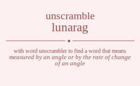

The word found after unscrambling lunarag means that measured by an angle or by the rate of change of an angle, having angles or an angular shape, .

The word found after unscrambling lunarag means that measured by an angle or by the rate of change of an angle, having angles or an angular shape, .
You can also find solutions for different combinations of letters in lunarag like lunarag lunarga lunaarg lunaagr lunagra lunagar lunraag lunraga lunraag lunraga lunrgaa lunrgaa lunaarg lunaagr lunarag lunarga lunagar lunagra lungara lungaar lungraa lungraa lungaar lungara luanrag luanrga luanarg luanagr luangra luangar luarnag luarnga luarang luaragn luargna luargan luaanrg luaangr luaarng luaargn luaagnr luaagrn luagnra luagnar luagrna luagran luaganr luagarn lurnaag lurnaga lurnaag lurnaga lurngaa lurngaa luranag luranga luraang luraagn luragna luragan luranag luranga luraang luraagn luragna luragan lurgnaa lurgnaa lurgana lurgaan lurgana lurgaan luanarg luanagr luanrag luanrga luangar luangra luaanrg luaangr luaarng luaargn luaagnr luaagrn luarnag luarnga luarang luaragn luargna luargan luagnar luagnra luaganr luagarn luagrna luagran lugnara lugnaar lugnraa lugnraa lugnaar lugnara luganra luganar lugarna lugaran lugaanr lugaarn lugrnaa lugrnaa lugrana lugraan lugrana lugraan luganar luganra lugaanr lugaarn lugarna lugaran lnuarag lnuarga lnuaarg lnuaagr lnuagra lnuagar lnuraag lnuraga lnuraag lnuraga lnurgaa lnurgaa lnuaarg lnuaagr lnuarag lnuarga lnuagar lnuagra lnugara lnugaar lnugraa lnugraa lnugaar lnugara lnaurag lnaurga lnauarg lnauagr lnaugra lnaugar lnaruag lnaruga lnaraug lnaragu lnargua lnargau lnaaurg lnaaugr lnaarug lnaargu lnaagur lnaagru lnagura lnaguar lnagrua lnagrau lnagaur lnagaru lnruaag lnruaga lnruaag lnruaga lnrugaa lnrugaa lnrauag lnrauga lnraaug lnraagu lnragua lnragau lnrauag lnrauga lnraaug lnraagu lnragua lnragau lnrguaa lnrguaa lnrgaua lnrgaau lnrgaua lnrgaau lnauarg lnauagr lnaurag lnaurga lnaugar lnaugra lnaaurg lnaaugr lnaarug lnaargu lnaagur lnaagru lnaruag lnaruga lnaraug lnaragu lnargua lnargau lnaguar lnagura lnagaur lnagaru lnagrua lnagrau lnguara lnguaar lnguraa lnguraa lnguaar lnguara lngaura lngauar lngarua lngarau lngaaur lngaaru lngruaa lngruaa lngraua lngraau lngraua lngraau lngauar lngaura lngaaur lngaaru lngarua lngarau launrag launrga launarg launagr laungra laungar laurnag laurnga laurang lauragn laurgna laurgan lauanrg lauangr lauarng lauargn lauagnr lauagrn laugnra laugnar laugrna laugran lauganr laugarn lanurag lanurga lanuarg lanuagr lanugra lanugar lanruag lanruga lanraug lanragu lanrgua lanrgau lanaurg lanaugr lanarug lanargu lanagur lanagru langura languar langrua langrau langaur langaru larunag larunga laruang laruagn larugna larugan larnuag larnuga larnaug larnagu larngua larngau laraung laraugn laranug larangu laragun laragnu larguna larguan largnua largnau largaun larganu laaunrg laaungr laaurng laaurgn laaugnr laaugrn laanurg laanugr laanrug laanrgu laangur laangru laarung laarugn laarnug laarngu laargun laargnu laagunr laagurn laagnur laagnru laagrun laagrnu lagunra lagunar lagurna laguran laguanr laguarn lagnura lagnuar lagnrua lagnrau lagnaur lagnaru lagruna lagruan lagrnua lagrnau lagraun lagranu lagaunr lagaurn laganur laganru lagarun lagarnu lrunaag lrunaga lrunaag lrunaga lrungaa lrungaa lruanag lruanga lruaang lruaagn lruagna lruagan lruanag lruanga lruaang lruaagn lruagna lruagan lrugnaa lrugnaa lrugana lrugaan lrugana lrugaan lrnuaag lrnuaga lrnuaag lrnuaga lrnugaa lrnugaa lrnauag lrnauga lrnaaug lrnaagu lrnagua lrnagau lrnauag lrnauga lrnaaug lrnaagu lrnagua lrnagau lrnguaa lrnguaa lrngaua lrngaau lrngaua lrngaau lraunag lraunga lrauang lrauagn lraugna lraugan lranuag lranuga lranaug lranagu lrangua lrangau lraaung lraaugn lraanug lraangu lraagun lraagnu lraguna lraguan lragnua lragnau lragaun lraganu lraunag lraunga lrauang lrauagn lraugna lraugan lranuag lranuga lranaug lranagu lrangua lrangau lraaung lraaugn lraanug lraangu lraagun lraagnu lraguna lraguan lragnua lragnau lragaun lraganu lrgunaa lrgunaa lrguana lrguaan lrguana lrguaan lrgnuaa lrgnuaa lrgnaua lrgnaau lrgnaua lrgnaau lrgauna lrgauan lrganua lrganau lrgaaun lrgaanu lrgauna lrgauan lrganua lrganau lrgaaun lrgaanu launarg launagr launrag launrga laungar laungra lauanrg lauangr lauarng lauargn lauagnr lauagrn laurnag laurnga laurang lauragn laurgna laurgan laugnar laugnra lauganr laugarn laugrna laugran lanuarg lanuagr lanurag lanurga lanugar lanugra lanaurg lanaugr lanarug lanargu lanagur lanagru lanruag lanruga lanraug lanragu lanrgua lanrgau languar langura langaur langaru langrua langrau laaunrg laaungr laaurng laaurgn laaugnr laaugrn laanurg laanugr laanrug laanrgu laangur laangru laarung laarugn laarnug laarngu laargun laargnu laagunr laagurn laagnur laagnru laagrun laagrnu larunag larunga laruang laruagn larugna larugan larnuag larnuga larnaug larnagu larngua larngau laraung laraugn laranug larangu laragun laragnu larguna larguan largnua largnau largaun larganu lagunar lagunra laguanr laguarn lagurna laguran lagnuar lagnura lagnaur lagnaru lagnrua lagnrau lagaunr lagaurn laganur laganru lagarun lagarnu lagruna lagruan lagrnua lagrnau lagraun lagranu lgunara lgunaar lgunraa lgunraa lgunaar lgunara lguanra lguanar lguarna lguaran lguaanr lguaarn lgurnaa lgurnaa lgurana lguraan lgurana lguraan lguanar lguanra lguaanr lguaarn lguarna lguaran lgnuara lgnuaar lgnuraa lgnuraa lgnuaar lgnuara lgnaura lgnauar lgnarua lgnarau lgnaaur lgnaaru lgnruaa lgnruaa lgnraua lgnraau lgnraua lgnraau lgnauar lgnaura lgnaaur lgnaaru lgnarua lgnarau lgaunra lgaunar lgaurna lgauran lgauanr lgauarn lganura lganuar lganrua lganrau lganaur lganaru lgaruna lgaruan lgarnua lgarnau lgaraun lgaranu lgaaunr lgaaurn lgaanur lgaanru lgaarun lgaarnu lgrunaa lgrunaa lgruana lgruaan lgruana lgruaan lgrnuaa lgrnuaa lgrnaua lgrnaau lgrnaua lgrnaau lgrauna lgrauan lgranua lgranau lgraaun lgraanu lgrauna lgrauan lgranua lgranau lgraaun lgraanu lgaunar lgaunra lgauanr lgauarn lgaurna lgauran lganuar lganura lganaur lganaru lganrua lganrau lgaaunr lgaaurn lgaanur lgaanru lgaarun lgaarnu lgaruna lgaruan lgarnua lgarnau lgaraun lgaranu ulnarag ulnarga ulnaarg ulnaagr ulnagra ulnagar ulnraag ulnraga ulnraag ulnraga ulnrgaa ulnrgaa ulnaarg ulnaagr ulnarag ulnarga ulnagar ulnagra ulngara ulngaar ulngraa ulngraa ulngaar ulngara ulanrag ulanrga ulanarg ulanagr ulangra ulangar ularnag ularnga ularang ularagn ulargna ulargan ulaanrg ulaangr ulaarng ulaargn ulaagnr ulaagrn ulagnra ulagnar ulagrna ulagran ulaganr ulagarn ulrnaag ulrnaga ulrnaag ulrnaga ulrngaa ulrngaa ulranag ulranga ulraang ulraagn ulragna ulragan ulranag ulranga ulraang ulraagn ulragna ulragan ulrgnaa ulrgnaa ulrgana ulrgaan ulrgana ulrgaan ulanarg ulanagr ulanrag ulanrga ulangar ulangra ulaanrg ulaangr ulaarng ulaargn ulaagnr ulaagrn ularnag ularnga ularang ularagn ulargna ulargan ulagnar ulagnra ulaganr ulagarn ulagrna ulagran ulgnara ulgnaar ulgnraa ulgnraa ulgnaar ulgnara ulganra ulganar ulgarna ulgaran ulgaanr ulgaarn ulgrnaa ulgrnaa ulgrana ulgraan ulgrana ulgraan ulganar ulganra ulgaanr ulgaarn ulgarna ulgaran unlarag unlarga unlaarg unlaagr unlagra unlagar unlraag unlraga unlraag unlraga unlrgaa unlrgaa unlaarg unlaagr unlarag unlarga unlagar unlagra unlgara unlgaar unlgraa unlgraa unlgaar unlgara unalrag unalrga unalarg unalagr unalgra unalgar unarlag unarlga unaralg unaragl unargla unargal unaalrg unaalgr unaarlg unaargl unaaglr unaagrl unaglra unaglar unagrla unagral unagalr unagarl unrlaag unrlaga unrlaag unrlaga unrlgaa unrlgaa unralag unralga unraalg unraagl unragla unragal unralag unralga unraalg unraagl unragla unragal unrglaa unrglaa unrgala unrgaal unrgala unrgaal unalarg unalagr unalrag unalrga unalgar unalgra unaalrg unaalgr unaarlg unaargl unaaglr unaagrl unarlag unarlga unaralg unaragl unargla unargal unaglar unaglra unagalr unagarl unagrla unagral unglara unglaar unglraa unglraa unglaar unglara ungalra ungalar ungarla ungaral ungaalr ungaarl ungrlaa ungrlaa ungrala ungraal ungrala ungraal ungalar ungalra ungaalr ungaarl ungarla ungaral ualnrag ualnrga ualnarg ualnagr ualngra ualngar ualrnag ualrnga ualrang ualragn ualrgna ualrgan ualanrg ualangr ualarng ualargn ualagnr ualagrn ualgnra ualgnar ualgrna ualgran ualganr ualgarn uanlrag uanlrga uanlarg uanlagr uanlgra uanlgar uanrlag uanrlga uanralg uanragl uanrgla uanrgal uanalrg uanalgr uanarlg uanargl uanaglr uanagrl uanglra uanglar uangrla uangral uangalr uangarl uarlnag uarlnga uarlang uarlagn uarlgna uarlgan uarnlag uarnlga uarnalg uarnagl uarngla uarngal uaralng uaralgn uaranlg uarangl uaragln uaragnl uarglna uarglan uargnla uargnal uargaln uarganl uaalnrg uaalngr uaalrng uaalrgn uaalgnr uaalgrn uaanlrg uaanlgr uaanrlg uaanrgl uaanglr uaangrl uaarlng uaarlgn uaarnlg uaarngl uaargln uaargnl uaaglnr uaaglrn uaagnlr uaagnrl uaagrln uaagrnl uaglnra uaglnar uaglrna uaglran uaglanr uaglarn uagnlra uagnlar uagnrla uagnral uagnalr uagnarl uagrlna uagrlan uagrnla uagrnal uagraln uagranl uagalnr uagalrn uaganlr uaganrl uagarln uagarnl urlnaag urlnaga urlnaag urlnaga urlngaa urlngaa urlanag urlanga urlaang urlaagn urlagna urlagan urlanag urlanga urlaang urlaagn urlagna urlagan urlgnaa urlgnaa urlgana urlgaan urlgana urlgaan urnlaag urnlaga urnlaag urnlaga urnlgaa urnlgaa urnalag urnalga urnaalg urnaagl urnagla urnagal urnalag urnalga urnaalg urnaagl urnagla urnagal urnglaa urnglaa urngala urngaal urngala urngaal uralnag uralnga uralang uralagn uralgna uralgan uranlag uranlga uranalg uranagl urangla urangal uraalng uraalgn uraanlg uraangl uraagln uraagnl uraglna uraglan uragnla uragnal uragaln uraganl uralnag uralnga uralang uralagn uralgna uralgan uranlag uranlga uranalg uranagl urangla urangal uraalng uraalgn uraanlg uraangl uraagln uraagnl uraglna uraglan uragnla uragnal uragaln uraganl urglnaa urglnaa urglana urglaan urglana urglaan urgnlaa urgnlaa urgnala urgnaal urgnala urgnaal urgalna urgalan urganla urganal urgaaln urgaanl urgalna urgalan urganla urganal urgaaln urgaanl ualnarg ualnagr ualnrag ualnrga ualngar ualngra ualanrg ualangr ualarng ualargn ualagnr ualagrn ualrnag ualrnga ualrang ualragn ualrgna ualrgan ualgnar ualgnra ualganr ualgarn ualgrna ualgran uanlarg uanlagr uanlrag uanlrga uanlgar uanlgra uanalrg uanalgr uanarlg uanargl uanaglr uanagrl uanrlag uanrlga uanralg uanragl uanrgla uanrgal uanglar uanglra uangalr uangarl uangrla uangral uaalnrg uaalngr uaalrng uaalrgn uaalgnr uaalgrn uaanlrg uaanlgr uaanrlg uaanrgl uaanglr uaangrl uaarlng uaarlgn uaarnlg uaarngl uaargln uaargnl uaaglnr uaaglrn uaagnlr uaagnrl uaagrln uaagrnl uarlnag uarlnga uarlang uarlagn uarlgna uarlgan uarnlag uarnlga uarnalg uarnagl uarngla uarngal uaralng uaralgn uaranlg uarangl uaragln uaragnl uarglna uarglan uargnla uargnal uargaln uarganl uaglnar uaglnra uaglanr uaglarn uaglrna uaglran uagnlar uagnlra uagnalr uagnarl uagnrla uagnral uagalnr uagalrn uaganlr uaganrl uagarln uagarnl uagrlna uagrlan uagrnla uagrnal uagraln uagranl uglnara uglnaar uglnraa uglnraa uglnaar uglnara uglanra uglanar uglarna uglaran uglaanr uglaarn uglrnaa uglrnaa uglrana uglraan uglrana uglraan uglanar uglanra uglaanr uglaarn uglarna uglaran ugnlara ugnlaar ugnlraa ugnlraa ugnlaar ugnlara ugnalra ugnalar ugnarla ugnaral ugnaalr ugnaarl ugnrlaa ugnrlaa ugnrala ugnraal ugnrala ugnraal ugnalar ugnalra ugnaalr ugnaarl ugnarla ugnaral ugalnra ugalnar ugalrna ugalran ugalanr ugalarn uganlra uganlar uganrla uganral uganalr uganarl ugarlna ugarlan ugarnla ugarnal ugaraln ugaranl ugaalnr ugaalrn ugaanlr ugaanrl ugaarln ugaarnl ugrlnaa ugrlnaa ugrlana ugrlaan ugrlana ugrlaan ugrnlaa ugrnlaa ugrnala ugrnaal ugrnala ugrnaal ugralna ugralan ugranla ugranal ugraaln ugraanl ugralna ugralan ugranla ugranal ugraaln ugraanl ugalnar ugalnra ugalanr ugalarn ugalrna ugalran uganlar uganlra uganalr uganarl uganrla uganral ugaalnr ugaalrn ugaanlr ugaanrl ugaarln ugaarnl ugarlna ugarlan ugarnla ugarnal ugaraln ugaranl nluarag nluarga nluaarg nluaagr nluagra nluagar nluraag nluraga nluraag nluraga nlurgaa nlurgaa nluaarg nluaagr nluarag nluarga nluagar nluagra nlugara nlugaar nlugraa nlugraa nlugaar nlugara nlaurag nlaurga nlauarg nlauagr nlaugra nlaugar nlaruag nlaruga nlaraug nlaragu nlargua nlargau nlaaurg nlaaugr nlaarug nlaargu nlaagur nlaagru nlagura nlaguar nlagrua nlagrau nlagaur nlagaru nlruaag nlruaga nlruaag nlruaga nlrugaa nlrugaa nlrauag nlrauga nlraaug nlraagu nlragua nlragau nlrauag nlrauga nlraaug nlraagu nlragua nlragau nlrguaa nlrguaa nlrgaua nlrgaau nlrgaua nlrgaau nlauarg nlauagr nlaurag nlaurga nlaugar nlaugra nlaaurg nlaaugr nlaarug nlaargu nlaagur nlaagru nlaruag nlaruga nlaraug nlaragu nlargua nlargau nlaguar nlagura nlagaur nlagaru nlagrua nlagrau nlguara nlguaar nlguraa nlguraa nlguaar nlguara nlgaura nlgauar nlgarua nlgarau nlgaaur nlgaaru nlgruaa nlgruaa nlgraua nlgraau nlgraua nlgraau nlgauar nlgaura nlgaaur nlgaaru nlgarua nlgarau nularag nularga nulaarg nulaagr nulagra nulagar nulraag nulraga nulraag nulraga nulrgaa nulrgaa nulaarg nulaagr nularag nularga nulagar nulagra nulgara nulgaar nulgraa nulgraa nulgaar nulgara nualrag nualrga nualarg nualagr nualgra nualgar nuarlag nuarlga nuaralg nuaragl nuargla nuargal nuaalrg nuaalgr nuaarlg nuaargl nuaaglr nuaagrl nuaglra nuaglar nuagrla nuagral nuagalr nuagarl nurlaag nurlaga nurlaag nurlaga nurlgaa nurlgaa nuralag nuralga nuraalg nuraagl nuragla nuragal nuralag nuralga nuraalg nuraagl nuragla nuragal nurglaa nurglaa nurgala nurgaal nurgala nurgaal nualarg nualagr nualrag nualrga nualgar nualgra nuaalrg nuaalgr nuaarlg nuaargl nuaaglr nuaagrl nuarlag nuarlga nuaralg nuaragl nuargla nuargal nuaglar nuaglra nuagalr nuagarl nuagrla nuagral nuglara nuglaar nuglraa nuglraa nuglaar nuglara nugalra nugalar nugarla nugaral nugaalr nugaarl nugrlaa nugrlaa nugrala nugraal nugrala nugraal nugalar nugalra nugaalr nugaarl nugarla nugaral nalurag nalurga naluarg naluagr nalugra nalugar nalruag nalruga nalraug nalragu nalrgua nalrgau nalaurg nalaugr nalarug nalargu nalagur nalagru nalgura nalguar nalgrua nalgrau nalgaur nalgaru naulrag naulrga naularg naulagr naulgra naulgar naurlag naurlga nauralg nauragl naurgla naurgal naualrg naualgr nauarlg nauargl nauaglr nauagrl nauglra nauglar naugrla naugral naugalr naugarl narluag narluga narlaug narlagu narlgua narlgau narulag narulga narualg naruagl narugla narugal naralug naralgu naraulg naraugl naraglu naragul narglua narglau nargula nargual nargalu nargaul naalurg naalugr naalrug naalrgu naalgur naalgru naaulrg naaulgr naaurlg naaurgl naauglr naaugrl naarlug naarlgu naarulg naarugl naarglu naargul naaglur naaglru naagulr naagurl naagrlu naagrul naglura nagluar naglrua naglrau naglaur naglaru nagulra nagular nagurla nagural nagualr naguarl nagrlua nagrlau nagrula nagrual nagralu nagraul nagalur nagalru nagaulr nagaurl nagarlu nagarul nrluaag nrluaga nrluaag nrluaga nrlugaa nrlugaa nrlauag nrlauga nrlaaug nrlaagu nrlagua nrlagau nrlauag nrlauga nrlaaug nrlaagu nrlagua nrlagau nrlguaa nrlguaa nrlgaua nrlgaau nrlgaua nrlgaau nrulaag nrulaga nrulaag nrulaga nrulgaa nrulgaa nrualag nrualga nruaalg nruaagl nruagla nruagal nrualag nrualga nruaalg nruaagl nruagla nruagal nruglaa nruglaa nrugala nrugaal nrugala nrugaal nraluag nraluga nralaug nralagu nralgua nralgau nraulag nraulga nraualg nrauagl nraugla nraugal nraalug nraalgu nraaulg nraaugl nraaglu nraagul nraglua nraglau nragula nragual nragalu nragaul nraluag nraluga nralaug nralagu nralgua nralgau nraulag nraulga nraualg nrauagl nraugla nraugal nraalug nraalgu nraaulg nraaugl nraaglu nraagul nraglua nraglau nragula nragual nragalu nragaul nrgluaa nrgluaa nrglaua nrglaau nrglaua nrglaau nrgulaa nrgulaa nrguala nrguaal nrguala nrguaal nrgalua nrgalau nrgaula nrgaual nrgaalu nrgaaul nrgalua nrgalau nrgaula nrgaual nrgaalu nrgaaul naluarg naluagr nalurag nalurga nalugar nalugra nalaurg nalaugr nalarug nalargu nalagur nalagru nalruag nalruga nalraug nalragu nalrgua nalrgau nalguar nalgura nalgaur nalgaru nalgrua nalgrau naularg naulagr naulrag naulrga naulgar naulgra naualrg naualgr nauarlg nauargl nauaglr nauagrl naurlag naurlga nauralg nauragl naurgla naurgal nauglar nauglra naugalr naugarl naugrla naugral naalurg naalugr naalrug naalrgu naalgur naalgru naaulrg naaulgr naaurlg naaurgl naauglr naaugrl naarlug naarlgu naarulg naarugl naarglu naargul naaglur naaglru naagulr naagurl naagrlu naagrul narluag narluga narlaug narlagu narlgua narlgau narulag narulga narualg naruagl narugla narugal naralug naralgu naraulg naraugl naraglu naragul narglua narglau nargula nargual nargalu nargaul nagluar naglura naglaur naglaru naglrua naglrau nagular nagulra nagualr naguarl nagurla nagural nagalur nagalru nagaulr nagaurl nagarlu nagarul nagrlua nagrlau nagrula nagrual nagralu nagraul ngluara ngluaar ngluraa ngluraa ngluaar ngluara nglaura nglauar nglarua nglarau nglaaur nglaaru nglruaa nglruaa nglraua nglraau nglraua nglraau nglauar nglaura nglaaur nglaaru nglarua nglarau ngulara ngulaar ngulraa ngulraa ngulaar ngulara ngualra ngualar nguarla nguaral nguaalr nguaarl ngurlaa ngurlaa ngurala nguraal ngurala nguraal ngualar ngualra nguaalr nguaarl nguarla nguaral ngalura ngaluar ngalrua ngalrau ngalaur ngalaru ngaulra ngaular ngaurla ngaural ngaualr ngauarl ngarlua ngarlau ngarula ngarual ngaralu ngaraul ngaalur ngaalru ngaaulr ngaaurl ngaarlu ngaarul ngrluaa ngrluaa ngrlaua ngrlaau ngrlaua ngrlaau ngrulaa ngrulaa ngruala ngruaal ngruala ngruaal ngralua ngralau ngraula ngraual ngraalu ngraaul ngralua ngralau ngraula ngraual ngraalu ngraaul ngaluar ngalura ngalaur ngalaru ngalrua ngalrau ngaular ngaulra ngaualr ngauarl ngaurla ngaural ngaalur ngaalru ngaaulr ngaaurl ngaarlu ngaarul ngarlua ngarlau ngarula ngarual ngaralu ngaraul alunrag alunrga alunarg alunagr alungra alungar alurnag alurnga alurang aluragn alurgna alurgan aluanrg aluangr aluarng aluargn aluagnr aluagrn alugnra alugnar alugrna alugran aluganr alugarn alnurag alnurga alnuarg alnuagr alnugra alnugar alnruag alnruga alnraug alnragu alnrgua alnrgau alnaurg alnaugr alnarug alnargu alnagur alnagru alngura alnguar alngrua alngrau alngaur alngaru alrunag alrunga alruang alruagn alrugna alrugan alrnuag alrnuga alrnaug alrnagu alrngua alrngau alraung alraugn alranug alrangu alragun alragnu alrguna alrguan alrgnua alrgnau alrgaun alrganu alaunrg alaungr alaurng alaurgn alaugnr alaugrn alanurg alanugr alanrug alanrgu alangur alangru alarung alarugn alarnug alarngu alargun alargnu alagunr alagurn alagnur alagnru alagrun alagrnu algunra algunar algurna alguran alguanr alguarn algnura algnuar algnrua algnrau algnaur algnaru algruna algruan algrnua algrnau algraun algranu algaunr algaurn alganur alganru algarun algarnu aulnrag aulnrga aulnarg aulnagr aulngra aulngar aulrnag aulrnga aulrang aulragn aulrgna aulrgan aulanrg aulangr aularng aulargn aulagnr aulagrn aulgnra aulgnar aulgrna aulgran aulganr aulgarn aunlrag aunlrga aunlarg aunlagr aunlgra aunlgar aunrlag aunrlga aunralg aunragl aunrgla aunrgal aunalrg aunalgr aunarlg aunargl aunaglr aunagrl aunglra aunglar aungrla aungral aungalr aungarl aurlnag aurlnga aurlang aurlagn aurlgna aurlgan aurnlag aurnlga aurnalg aurnagl aurngla aurngal auralng auralgn auranlg aurangl auragln auragnl aurglna aurglan aurgnla aurgnal aurgaln aurganl aualnrg aualngr aualrng aualrgn aualgnr aualgrn auanlrg auanlgr auanrlg auanrgl auanglr auangrl auarlng auarlgn auarnlg auarngl auargln auargnl auaglnr auaglrn auagnlr auagnrl auagrln auagrnl auglnra auglnar auglrna auglran auglanr auglarn augnlra augnlar augnrla augnral augnalr augnarl augrlna augrlan augrnla augrnal augraln augranl augalnr augalrn auganlr auganrl augarln augarnl anlurag anlurga anluarg anluagr anlugra anlugar anlruag anlruga anlraug anlragu anlrgua anlrgau anlaurg anlaugr anlarug anlargu anlagur anlagru anlgura anlguar anlgrua anlgrau anlgaur anlgaru anulrag anulrga anularg anulagr anulgra anulgar anurlag anurlga anuralg anuragl anurgla anurgal anualrg anualgr anuarlg anuargl anuaglr anuagrl anuglra anuglar anugrla anugral anugalr anugarl anrluag anrluga anrlaug anrlagu anrlgua anrlgau anrulag anrulga anrualg anruagl anrugla anrugal anralug anralgu anraulg anraugl anraglu anragul anrglua anrglau anrgula anrgual anrgalu anrgaul analurg analugr analrug analrgu analgur analgru anaulrg anaulgr anaurlg anaurgl anauglr anaugrl anarlug anarlgu anarulg anarugl anarglu anargul anaglur anaglru anagulr anagurl anagrlu anagrul anglura angluar anglrua anglrau anglaur anglaru angulra angular angurla angural angualr anguarl angrlua angrlau angrula angrual angralu angraul angalur angalru angaulr angaurl angarlu angarul arlunag arlunga arluang arluagn arlugna arlugan arlnuag arlnuga arlnaug arlnagu arlngua arlngau arlaung arlaugn arlanug arlangu arlagun arlagnu arlguna arlguan arlgnua arlgnau arlgaun arlganu arulnag arulnga arulang arulagn arulgna arulgan arunlag arunlga arunalg arunagl arungla arungal arualng arualgn aruanlg aruangl aruagln aruagnl aruglna aruglan arugnla arugnal arugaln aruganl arnluag arnluga arnlaug arnlagu arnlgua arnlgau arnulag arnulga arnualg arnuagl arnugla arnugal arnalug arnalgu arnaulg arnaugl arnaglu arnagul arnglua arnglau arngula arngual arngalu arngaul aralung aralugn aralnug aralngu aralgun aralgnu araulng araulgn araunlg araungl araugln araugnl aranlug aranlgu aranulg aranugl aranglu arangul araglun araglnu araguln aragunl aragnlu aragnul argluna argluan arglnua arglnau arglaun arglanu argulna argulan argunla argunal argualn arguanl argnlua argnlau argnula argnual argnalu argnaul argalun argalnu argauln argaunl arganlu arganul aalunrg aalungr aalurng aalurgn aalugnr aalugrn aalnurg aalnugr aalnrug aalnrgu aalngur aalngru aalrung aalrugn aalrnug aalrngu aalrgun aalrgnu aalgunr aalgurn aalgnur aalgnru aalgrun aalgrnu aaulnrg aaulngr aaulrng aaulrgn aaulgnr aaulgrn aaunlrg aaunlgr aaunrlg aaunrgl aaunglr aaungrl aaurlng aaurlgn aaurnlg aaurngl aaurgln aaurgnl aauglnr aauglrn aaugnlr aaugnrl aaugrln aaugrnl aanlurg aanlugr aanlrug aanlrgu aanlgur aanlgru aanulrg aanulgr aanurlg aanurgl aanuglr aanugrl aanrlug aanrlgu aanrulg aanrugl aanrglu aanrgul aanglur aanglru aangulr aangurl aangrlu aangrul aarlung aarlugn aarlnug aarlngu aarlgun aarlgnu aarulng aarulgn aarunlg aarungl aarugln aarugnl aarnlug aarnlgu aarnulg aarnugl aarnglu aarngul aarglun aarglnu aarguln aargunl aargnlu aargnul aaglunr aaglurn aaglnur aaglnru aaglrun aaglrnu aagulnr aagulrn aagunlr aagunrl aagurln aagurnl aagnlur aagnlru aagnulr aagnurl aagnrlu aagnrul aagrlun aagrlnu aagruln aagrunl aagrnlu aagrnul aglunra aglunar aglurna agluran agluanr agluarn aglnura aglnuar aglnrua aglnrau aglnaur aglnaru aglruna aglruan aglrnua aglrnau aglraun aglranu aglaunr aglaurn aglanur aglanru aglarun aglarnu agulnra agulnar agulrna agulran agulanr agularn agunlra agunlar agunrla agunral agunalr agunarl agurlna agurlan agurnla agurnal aguraln aguranl agualnr agualrn aguanlr aguanrl aguarln aguarnl agnlura agnluar agnlrua agnlrau agnlaur agnlaru agnulra agnular agnurla agnural agnualr agnuarl agnrlua agnrlau agnrula agnrual agnralu agnraul agnalur agnalru agnaulr agnaurl agnarlu agnarul agrluna agrluan agrlnua agrlnau agrlaun agrlanu agrulna agrulan agrunla agrunal agrualn agruanl agrnlua agrnlau agrnula agrnual agrnalu agrnaul agralun agralnu agrauln agraunl agranlu agranul agalunr agalurn agalnur agalnru agalrun agalrnu agaulnr agaulrn agaunlr agaunrl agaurln agaurnl aganlur aganlru aganulr aganurl aganrlu aganrul agarlun agarlnu agaruln agarunl agarnlu agarnul rlunaag rlunaga rlunaag rlunaga rlungaa rlungaa rluanag rluanga rluaang rluaagn rluagna rluagan rluanag rluanga rluaang rluaagn rluagna rluagan rlugnaa rlugnaa rlugana rlugaan rlugana rlugaan rlnuaag rlnuaga rlnuaag rlnuaga rlnugaa rlnugaa rlnauag rlnauga rlnaaug rlnaagu rlnagua rlnagau rlnauag rlnauga rlnaaug rlnaagu rlnagua rlnagau rlnguaa rlnguaa rlngaua rlngaau rlngaua rlngaau rlaunag rlaunga rlauang rlauagn rlaugna rlaugan rlanuag rlanuga rlanaug rlanagu rlangua rlangau rlaaung rlaaugn rlaanug rlaangu rlaagun rlaagnu rlaguna rlaguan rlagnua rlagnau rlagaun rlaganu rlaunag rlaunga rlauang rlauagn rlaugna rlaugan rlanuag rlanuga rlanaug rlanagu rlangua rlangau rlaaung rlaaugn rlaanug rlaangu rlaagun rlaagnu rlaguna rlaguan rlagnua rlagnau rlagaun rlaganu rlgunaa rlgunaa rlguana rlguaan rlguana rlguaan rlgnuaa rlgnuaa rlgnaua rlgnaau rlgnaua rlgnaau rlgauna rlgauan rlganua rlganau rlgaaun rlgaanu rlgauna rlgauan rlganua rlganau rlgaaun rlgaanu rulnaag rulnaga rulnaag rulnaga rulngaa rulngaa rulanag rulanga rulaang rulaagn rulagna rulagan rulanag rulanga rulaang rulaagn rulagna rulagan rulgnaa rulgnaa rulgana rulgaan rulgana rulgaan runlaag runlaga runlaag runlaga runlgaa runlgaa runalag runalga runaalg runaagl runagla runagal runalag runalga runaalg runaagl runagla runagal runglaa runglaa rungala rungaal rungala rungaal rualnag rualnga rualang rualagn rualgna rualgan ruanlag ruanlga ruanalg ruanagl ruangla ruangal ruaalng ruaalgn ruaanlg ruaangl ruaagln ruaagnl ruaglna ruaglan ruagnla ruagnal ruagaln ruaganl rualnag rualnga rualang rualagn rualgna rualgan ruanlag ruanlga ruanalg ruanagl ruangla ruangal ruaalng ruaalgn ruaanlg ruaangl ruaagln ruaagnl ruaglna ruaglan ruagnla ruagnal ruagaln ruaganl ruglnaa ruglnaa ruglana ruglaan ruglana ruglaan rugnlaa rugnlaa rugnala rugnaal rugnala rugnaal rugalna rugalan ruganla ruganal rugaaln rugaanl rugalna rugalan ruganla ruganal rugaaln rugaanl rnluaag rnluaga rnluaag rnluaga rnlugaa rnlugaa rnlauag rnlauga rnlaaug rnlaagu rnlagua rnlagau rnlauag rnlauga rnlaaug rnlaagu rnlagua rnlagau rnlguaa rnlguaa rnlgaua rnlgaau rnlgaua rnlgaau rnulaag rnulaga rnulaag rnulaga rnulgaa rnulgaa rnualag rnualga rnuaalg rnuaagl rnuagla rnuagal rnualag rnualga rnuaalg rnuaagl rnuagla rnuagal rnuglaa rnuglaa rnugala rnugaal rnugala rnugaal rnaluag rnaluga rnalaug rnalagu rnalgua rnalgau rnaulag rnaulga rnaualg rnauagl rnaugla rnaugal rnaalug rnaalgu rnaaulg rnaaugl rnaaglu rnaagul rnaglua rnaglau rnagula rnagual rnagalu rnagaul rnaluag rnaluga rnalaug rnalagu rnalgua rnalgau rnaulag rnaulga rnaualg rnauagl rnaugla rnaugal rnaalug rnaalgu rnaaulg rnaaugl rnaaglu rnaagul rnaglua rnaglau rnagula rnagual rnagalu rnagaul rngluaa rngluaa rnglaua rnglaau rnglaua rnglaau rngulaa rngulaa rnguala rnguaal rnguala rnguaal rngalua rngalau rngaula rngaual rngaalu rngaaul rngalua rngalau rngaula rngaual rngaalu rngaaul ralunag ralunga raluang raluagn ralugna ralugan ralnuag ralnuga ralnaug ralnagu ralngua ralngau ralaung ralaugn ralanug ralangu ralagun ralagnu ralguna ralguan ralgnua ralgnau ralgaun ralganu raulnag raulnga raulang raulagn raulgna raulgan raunlag raunlga raunalg raunagl raungla raungal raualng raualgn rauanlg rauangl rauagln rauagnl rauglna rauglan raugnla raugnal raugaln rauganl ranluag ranluga ranlaug ranlagu ranlgua ranlgau ranulag ranulga ranualg ranuagl ranugla ranugal ranalug ranalgu ranaulg ranaugl ranaglu ranagul ranglua ranglau rangula rangual rangalu rangaul raalung raalugn raalnug raalngu raalgun raalgnu raaulng raaulgn raaunlg raaungl raaugln raaugnl raanlug raanlgu raanulg raanugl raanglu raangul raaglun raaglnu raaguln raagunl raagnlu raagnul ragluna ragluan raglnua raglnau raglaun raglanu ragulna ragulan ragunla ragunal ragualn raguanl ragnlua ragnlau ragnula ragnual ragnalu ragnaul ragalun ragalnu ragauln ragaunl raganlu raganul ralunag ralunga raluang raluagn ralugna ralugan ralnuag ralnuga ralnaug ralnagu ralngua ralngau ralaung ralaugn ralanug ralangu ralagun ralagnu ralguna ralguan ralgnua ralgnau ralgaun ralganu raulnag raulnga raulang raulagn raulgna raulgan raunlag raunlga raunalg raunagl raungla raungal raualng raualgn rauanlg rauangl rauagln rauagnl rauglna rauglan raugnla raugnal raugaln rauganl ranluag ranluga ranlaug ranlagu ranlgua ranlgau ranulag ranulga ranualg ranuagl ranugla ranugal ranalug ranalgu ranaulg ranaugl ranaglu ranagul ranglua ranglau rangula rangual rangalu rangaul raalung raalugn raalnug raalngu raalgun raalgnu raaulng raaulgn raaunlg raaungl raaugln raaugnl raanlug raanlgu raanulg raanugl raanglu raangul raaglun raaglnu raaguln raagunl raagnlu raagnul ragluna ragluan raglnua raglnau raglaun raglanu ragulna ragulan ragunla ragunal ragualn raguanl ragnlua ragnlau ragnula ragnual ragnalu ragnaul ragalun ragalnu ragauln ragaunl raganlu raganul rglunaa rglunaa rgluana rgluaan rgluana rgluaan rglnuaa rglnuaa rglnaua rglnaau rglnaua rglnaau rglauna rglauan rglanua rglanau rglaaun rglaanu rglauna rglauan rglanua rglanau rglaaun rglaanu rgulnaa rgulnaa rgulana rgulaan rgulana rgulaan rgunlaa rgunlaa rgunala rgunaal rgunala rgunaal rgualna rgualan rguanla rguanal rguaaln rguaanl rgualna rgualan rguanla rguanal rguaaln rguaanl rgnluaa rgnluaa rgnlaua rgnlaau rgnlaua rgnlaau rgnulaa rgnulaa rgnuala rgnuaal rgnuala rgnuaal rgnalua rgnalau rgnaula rgnaual rgnaalu rgnaaul rgnalua rgnalau rgnaula rgnaual rgnaalu rgnaaul rgaluna rgaluan rgalnua rgalnau rgalaun rgalanu rgaulna rgaulan rgaunla rgaunal rgaualn rgauanl rganlua rganlau rganula rganual rganalu rganaul rgaalun rgaalnu rgaauln rgaaunl rgaanlu rgaanul rgaluna rgaluan rgalnua rgalnau rgalaun rgalanu rgaulna rgaulan rgaunla rgaunal rgaualn rgauanl rganlua rganlau rganula rganual rganalu rganaul rgaalun rgaalnu rgaauln rgaaunl rgaanlu rgaanul alunarg alunagr alunrag alunrga alungar alungra aluanrg aluangr aluarng aluargn aluagnr aluagrn alurnag alurnga alurang aluragn alurgna alurgan alugnar alugnra aluganr alugarn alugrna alugran alnuarg alnuagr alnurag alnurga alnugar alnugra alnaurg alnaugr alnarug alnargu alnagur alnagru alnruag alnruga alnraug alnragu alnrgua alnrgau alnguar alngura alngaur alngaru alngrua alngrau alaunrg alaungr alaurng alaurgn alaugnr alaugrn alanurg alanugr alanrug alanrgu alangur alangru alarung alarugn alarnug alarngu alargun alargnu alagunr alagurn alagnur alagnru alagrun alagrnu alrunag alrunga alruang alruagn alrugna alrugan alrnuag alrnuga alrnaug alrnagu alrngua alrngau alraung alraugn alranug alrangu alragun alragnu alrguna alrguan alrgnua alrgnau alrgaun alrganu algunar algunra alguanr alguarn algurna alguran algnuar algnura algnaur algnaru algnrua algnrau algaunr algaurn alganur alganru algarun algarnu algruna algruan algrnua algrnau algraun algranu aulnarg aulnagr aulnrag aulnrga aulngar aulngra aulanrg aulangr aularng aulargn aulagnr aulagrn aulrnag aulrnga aulrang aulragn aulrgna aulrgan aulgnar aulgnra aulganr aulgarn aulgrna aulgran aunlarg aunlagr aunlrag aunlrga aunlgar aunlgra aunalrg aunalgr aunarlg aunargl aunaglr aunagrl aunrlag aunrlga aunralg aunragl aunrgla aunrgal aunglar aunglra aungalr aungarl aungrla aungral aualnrg aualngr aualrng aualrgn aualgnr aualgrn auanlrg auanlgr auanrlg auanrgl auanglr auangrl auarlng auarlgn auarnlg auarngl auargln auargnl auaglnr auaglrn auagnlr auagnrl auagrln auagrnl aurlnag aurlnga aurlang aurlagn aurlgna aurlgan aurnlag aurnlga aurnalg aurnagl aurngla aurngal auralng auralgn auranlg aurangl auragln auragnl aurglna aurglan aurgnla aurgnal aurgaln aurganl auglnar auglnra auglanr auglarn auglrna auglran augnlar augnlra augnalr augnarl augnrla augnral augalnr augalrn auganlr auganrl augarln augarnl augrlna augrlan augrnla augrnal augraln augranl anluarg anluagr anlurag anlurga anlugar anlugra anlaurg anlaugr anlarug anlargu anlagur anlagru anlruag anlruga anlraug anlragu anlrgua anlrgau anlguar anlgura anlgaur anlgaru anlgrua anlgrau anularg anulagr anulrag anulrga anulgar anulgra anualrg anualgr anuarlg anuargl anuaglr anuagrl anurlag anurlga anuralg anuragl anurgla anurgal anuglar anuglra anugalr anugarl anugrla anugral analurg analugr analrug analrgu analgur analgru anaulrg anaulgr anaurlg anaurgl anauglr anaugrl anarlug anarlgu anarulg anarugl anarglu anargul anaglur anaglru anagulr anagurl anagrlu anagrul anrluag anrluga anrlaug anrlagu anrlgua anrlgau anrulag anrulga anrualg anruagl anrugla anrugal anralug anralgu anraulg anraugl anraglu anragul anrglua anrglau anrgula anrgual anrgalu anrgaul angluar anglura anglaur anglaru anglrua anglrau angular angulra angualr anguarl angurla angural angalur angalru angaulr angaurl angarlu angarul angrlua angrlau angrula angrual angralu angraul aalunrg aalungr aalurng aalurgn aalugnr aalugrn aalnurg aalnugr aalnrug aalnrgu aalngur aalngru aalrung aalrugn aalrnug aalrngu aalrgun aalrgnu aalgunr aalgurn aalgnur aalgnru aalgrun aalgrnu aaulnrg aaulngr aaulrng aaulrgn aaulgnr aaulgrn aaunlrg aaunlgr aaunrlg aaunrgl aaunglr aaungrl aaurlng aaurlgn aaurnlg aaurngl aaurgln aaurgnl aauglnr aauglrn aaugnlr aaugnrl aaugrln aaugrnl aanlurg aanlugr aanlrug aanlrgu aanlgur aanlgru aanulrg aanulgr aanurlg aanurgl aanuglr aanugrl aanrlug aanrlgu aanrulg aanrugl aanrglu aanrgul aanglur aanglru aangulr aangurl aangrlu aangrul aarlung aarlugn aarlnug aarlngu aarlgun aarlgnu aarulng aarulgn aarunlg aarungl aarugln aarugnl aarnlug aarnlgu aarnulg aarnugl aarnglu aarngul aarglun aarglnu aarguln aargunl aargnlu aargnul aaglunr aaglurn aaglnur aaglnru aaglrun aaglrnu aagulnr aagulrn aagunlr aagunrl aagurln aagurnl aagnlur aagnlru aagnulr aagnurl aagnrlu aagnrul aagrlun aagrlnu aagruln aagrunl aagrnlu aagrnul arlunag arlunga arluang arluagn arlugna arlugan arlnuag arlnuga arlnaug arlnagu arlngua arlngau arlaung arlaugn arlanug arlangu arlagun arlagnu arlguna arlguan arlgnua arlgnau arlgaun arlganu arulnag arulnga arulang arulagn arulgna arulgan arunlag arunlga arunalg arunagl arungla arungal arualng arualgn aruanlg aruangl aruagln aruagnl aruglna aruglan arugnla arugnal arugaln aruganl arnluag arnluga arnlaug arnlagu arnlgua arnlgau arnulag arnulga arnualg arnuagl arnugla arnugal arnalug arnalgu arnaulg arnaugl arnaglu arnagul arnglua arnglau arngula arngual arngalu arngaul aralung aralugn aralnug aralngu aralgun aralgnu araulng araulgn araunlg araungl araugln araugnl aranlug aranlgu aranulg aranugl aranglu arangul araglun araglnu araguln aragunl aragnlu aragnul argluna argluan arglnua arglnau arglaun arglanu argulna argulan argunla argunal argualn arguanl argnlua argnlau argnula argnual argnalu argnaul argalun argalnu argauln argaunl arganlu arganul aglunar aglunra agluanr agluarn aglurna agluran aglnuar aglnura aglnaur aglnaru aglnrua aglnrau aglaunr aglaurn aglanur aglanru aglarun aglarnu aglruna aglruan aglrnua aglrnau aglraun aglranu agulnar agulnra agulanr agularn agulrna agulran agunlar agunlra agunalr agunarl agunrla agunral agualnr agualrn aguanlr aguanrl aguarln aguarnl agurlna agurlan agurnla agurnal aguraln aguranl agnluar agnlura agnlaur agnlaru agnlrua agnlrau agnular agnulra agnualr agnuarl agnurla agnural agnalur agnalru agnaulr agnaurl agnarlu agnarul agnrlua agnrlau agnrula agnrual agnralu agnraul agalunr agalurn agalnur agalnru agalrun agalrnu agaulnr agaulrn agaunlr agaunrl agaurln agaurnl aganlur aganlru aganulr aganurl aganrlu aganrul agarlun agarlnu agaruln agarunl agarnlu agarnul agrluna agrluan agrlnua agrlnau agrlaun agrlanu agrulna agrulan agrunla agrunal agrualn agruanl agrnlua agrnlau agrnula agrnual agrnalu agrnaul agralun agralnu agrauln agraunl agranlu agranul glunara glunaar glunraa glunraa glunaar glunara gluanra gluanar gluarna gluaran gluaanr gluaarn glurnaa glurnaa glurana gluraan glurana gluraan gluanar gluanra gluaanr gluaarn gluarna gluaran glnuara glnuaar glnuraa glnuraa glnuaar glnuara glnaura glnauar glnarua glnarau glnaaur glnaaru glnruaa glnruaa glnraua glnraau glnraua glnraau glnauar glnaura glnaaur glnaaru glnarua glnarau glaunra glaunar glaurna glauran glauanr glauarn glanura glanuar glanrua glanrau glanaur glanaru glaruna glaruan glarnua glarnau glaraun glaranu glaaunr glaaurn glaanur glaanru glaarun glaarnu glrunaa glrunaa glruana glruaan glruana glruaan glrnuaa glrnuaa glrnaua glrnaau glrnaua glrnaau glrauna glrauan glranua glranau glraaun glraanu glrauna glrauan glranua glranau glraaun glraanu glaunar glaunra glauanr glauarn glaurna glauran glanuar glanura glanaur glanaru glanrua glanrau glaaunr glaaurn glaanur glaanru glaarun glaarnu glaruna glaruan glarnua glarnau glaraun glaranu gulnara gulnaar gulnraa gulnraa gulnaar gulnara gulanra gulanar gularna gularan gulaanr gulaarn gulrnaa gulrnaa gulrana gulraan gulrana gulraan gulanar gulanra gulaanr gulaarn gularna gularan gunlara gunlaar gunlraa gunlraa gunlaar gunlara gunalra gunalar gunarla gunaral gunaalr gunaarl gunrlaa gunrlaa gunrala gunraal gunrala gunraal gunalar gunalra gunaalr gunaarl gunarla gunaral gualnra gualnar gualrna gualran gualanr gualarn guanlra guanlar guanrla guanral guanalr guanarl guarlna guarlan guarnla guarnal guaraln guaranl guaalnr guaalrn guaanlr guaanrl guaarln guaarnl gurlnaa gurlnaa gurlana gurlaan gurlana gurlaan gurnlaa gurnlaa gurnala gurnaal gurnala gurnaal guralna guralan guranla guranal guraaln guraanl guralna guralan guranla guranal guraaln guraanl gualnar gualnra gualanr gualarn gualrna gualran guanlar guanlra guanalr guanarl guanrla guanral guaalnr guaalrn guaanlr guaanrl guaarln guaarnl guarlna guarlan guarnla guarnal guaraln guaranl gnluara gnluaar gnluraa gnluraa gnluaar gnluara gnlaura gnlauar gnlarua gnlarau gnlaaur gnlaaru gnlruaa gnlruaa gnlraua gnlraau gnlraua gnlraau gnlauar gnlaura gnlaaur gnlaaru gnlarua gnlarau gnulara gnulaar gnulraa gnulraa gnulaar gnulara gnualra gnualar gnuarla gnuaral gnuaalr gnuaarl gnurlaa gnurlaa gnurala gnuraal gnurala gnuraal gnualar gnualra gnuaalr gnuaarl gnuarla gnuaral gnalura gnaluar gnalrua gnalrau gnalaur gnalaru gnaulra gnaular gnaurla gnaural gnaualr gnauarl gnarlua gnarlau gnarula gnarual gnaralu gnaraul gnaalur gnaalru gnaaulr gnaaurl gnaarlu gnaarul gnrluaa gnrluaa gnrlaua gnrlaau gnrlaua gnrlaau gnrulaa gnrulaa gnruala gnruaal gnruala gnruaal gnralua gnralau gnraula gnraual gnraalu gnraaul gnralua gnralau gnraula gnraual gnraalu gnraaul gnaluar gnalura gnalaur gnalaru gnalrua gnalrau gnaular gnaulra gnaualr gnauarl gnaurla gnaural gnaalur gnaalru gnaaulr gnaaurl gnaarlu gnaarul gnarlua gnarlau gnarula gnarual gnaralu gnaraul galunra galunar galurna galuran galuanr galuarn galnura galnuar galnrua galnrau galnaur galnaru galruna galruan galrnua galrnau galraun galranu galaunr galaurn galanur galanru galarun galarnu gaulnra gaulnar gaulrna gaulran gaulanr gaularn gaunlra gaunlar gaunrla gaunral gaunalr gaunarl gaurlna gaurlan gaurnla gaurnal gauraln gauranl gaualnr gaualrn gauanlr gauanrl gauarln gauarnl ganlura ganluar ganlrua ganlrau ganlaur ganlaru ganulra ganular ganurla ganural ganualr ganuarl ganrlua ganrlau ganrula ganrual ganralu ganraul ganalur ganalru ganaulr ganaurl ganarlu ganarul garluna garluan garlnua garlnau garlaun garlanu garulna garulan garunla garunal garualn garuanl garnlua garnlau garnula garnual garnalu garnaul garalun garalnu garauln garaunl garanlu garanul gaalunr gaalurn gaalnur gaalnru gaalrun gaalrnu gaaulnr gaaulrn gaaunlr gaaunrl gaaurln gaaurnl gaanlur gaanlru gaanulr gaanurl gaanrlu gaanrul gaarlun gaarlnu gaaruln gaarunl gaarnlu gaarnul grlunaa grlunaa grluana grluaan grluana grluaan grlnuaa grlnuaa grlnaua grlnaau grlnaua grlnaau grlauna grlauan grlanua grlanau grlaaun grlaanu grlauna grlauan grlanua grlanau grlaaun grlaanu grulnaa grulnaa grulana grulaan grulana grulaan grunlaa grunlaa grunala grunaal grunala grunaal grualna grualan gruanla gruanal gruaaln gruaanl grualna grualan gruanla gruanal gruaaln gruaanl grnluaa grnluaa grnlaua grnlaau grnlaua grnlaau grnulaa grnulaa grnuala grnuaal grnuala grnuaal grnalua grnalau grnaula grnaual grnaalu grnaaul grnalua grnalau grnaula grnaual grnaalu grnaaul graluna graluan gralnua gralnau gralaun gralanu graulna graulan graunla graunal graualn grauanl granlua granlau granula granual granalu granaul graalun graalnu graauln graaunl graanlu graanul graluna graluan gralnua gralnau gralaun gralanu graulna graulan graunla graunal graualn grauanl granlua granlau granula granual granalu granaul graalun graalnu graauln graaunl graanlu graanul galunar galunra galuanr galuarn galurna galuran galnuar galnura galnaur galnaru galnrua galnrau galaunr galaurn galanur galanru galarun galarnu galruna galruan galrnua galrnau galraun galranu gaulnar gaulnra gaulanr gaularn gaulrna gaulran gaunlar gaunlra gaunalr gaunarl gaunrla gaunral gaualnr gaualrn gauanlr gauanrl gauarln gauarnl gaurlna gaurlan gaurnla gaurnal gauraln gauranl ganluar ganlura ganlaur ganlaru ganlrua ganlrau ganular ganulra ganualr ganuarl ganurla ganural ganalur ganalru ganaulr ganaurl ganarlu ganarul ganrlua ganrlau ganrula ganrual ganralu ganraul gaalunr gaalurn gaalnur gaalnru gaalrun gaalrnu gaaulnr gaaulrn gaaunlr gaaunrl gaaurln gaaurnl gaanlur gaanlru gaanulr gaanurl gaanrlu gaanrul gaarlun gaarlnu gaaruln gaarunl gaarnlu gaarnul garluna garluan garlnua garlnau garlaun garlanu garulna garulan garunla garunal garualn garuanl garnlua garnlau garnula garnual garnalu garnaul garalun garalnu garauln garaunl garanlu garanul.
Unscramble Words is registered trademark.